Kanelbulle
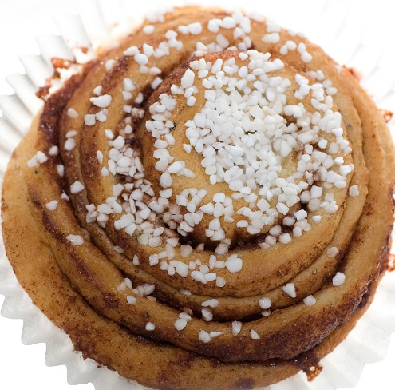 Klassiskt bakverk. Vår version bakas utan kardemumma och innehåller inte någon mandel.

Nedan finns en presentation av det som är vårt standardutbud av fikabröd. Varje dag finns dessutom 5 - 10 ytterligare sorter som varierar beroende på vad vi känner för att baka. Välkomna in och smaka på!
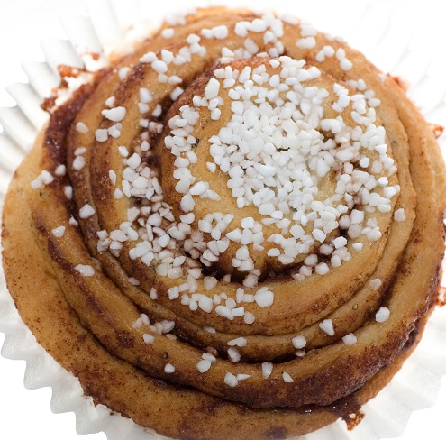 Klassiskt bakverk. Vår version bakas utan kardemumma och innehåller inte någon mandel.
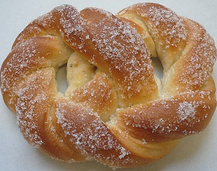 Mjuka, nybakade sockerkringlor.
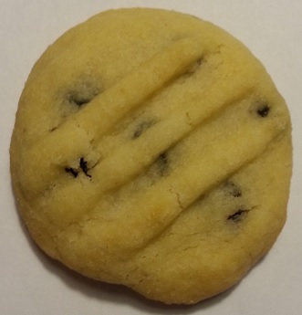 Underbart möra småkakor med korinter.
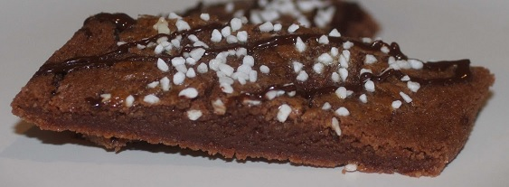 Småseg kaka med smak av choklad. Dekorerad med pärlsocker och överringlad med mörk choklad.
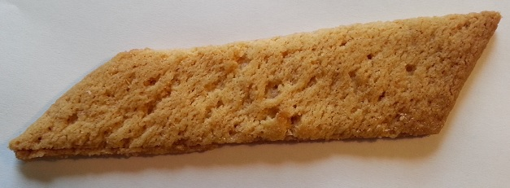 Småseg kaka med smak av kola. Kallas även sirapskaka.
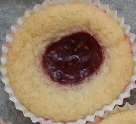 Möra bakverk med en klick hallonsylt i mitten. Vi använder enbart ekologisk hallonsylt till kakorna.
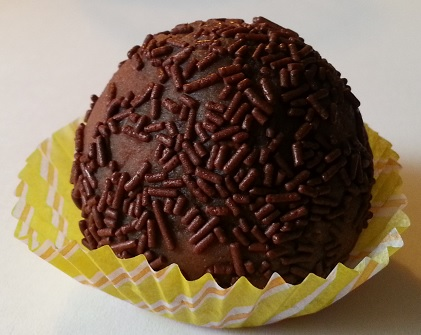 Chokladig boll med smak av arrak (innehåller dock ingen alkohol) (innehåller dock ingen alkohol) och rullad i chokladströssel. Kan ätas med eller utan sked.
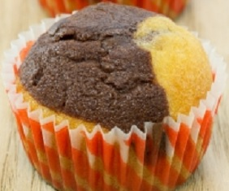 Fläckig eller strimmig muffin med smak av vanilj och choklad.
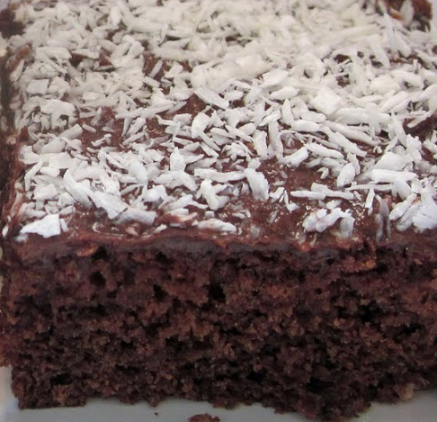 Mjuk chokladkaka med en choklad- och kaffeglasyr, täck med kokos. Kallas även snoddas.
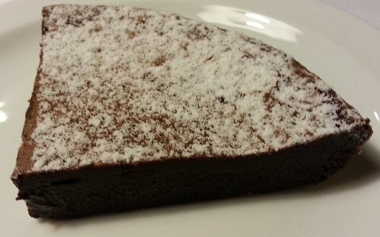 Klassiker till fikat. Inga nötter eller mandlar i smeten. Serveras med apelsingrädde och lite ringlad chokladsås.